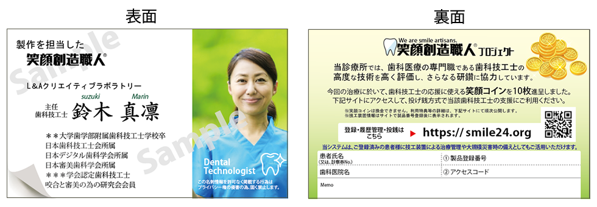

技工装置のトレーサビリティに関する
重要なお知らせ
お得意様各位
当技工所（{{技工所名}}）では、歯科医療の激変する環境に対応する試みとして
「笑顔創造職人®」プロジェクト
の活用により
技工装置のトレーサビリティ
を実施することとなりました。 本書面をご参照賜り導入の趣旨にご賛同いただけます場合は、利用登録と連携承認をお願いいたします。 システム導入の目的や期待するメリットはプロジェクトが提唱する内容で恐縮ですが以下の通りです。
安心安全を主軸に高度な歯科技工技術の提供による患者満足度を追求し、患者様の定着及び口コミ効果に寄与する。
技術の差別化を追求することにより歯科医療機関へ付加価値と利潤を提供する。（デジタル化による平準化対策）
個々の技量を評価して可能な範囲公表することによる歯科技工士不足対策を実施する。
歯科技工士の「学び」を記録し明示することで、個々の技術力を向上させる。（学会連携機能）
目標設定の明確化による未習熟歯科技工士の育成に寄与する。（辞職者の減少へ）
技術向上の為に技工装置画像を保存し研究する事で製作上の不具合発生率を減少させる。（失敗事例の見える化と原因探究）
製作過程を記した技工録（令和5年4月1日義務化施行）を有効活用する。
笑顔コイン
や
つら〜いコイン
の遊び心を起点とするイベント化への期待。等々
１．システム概略 : 笑顔創造職人プロジェクト https://smile24.org
納品時に製作担当者の名刺（アクセスコード付）をお届けします。（注：すべての納品に添付するとは限りません。）
技工装置に問題がなければ、患者様にお渡しください。製作者情報が明示されています。履歴管理も可能です。
納品した技工装置にお気づきの改善点等があれば、名刺のメモ欄に不具合状況等を記載して技工所へご返却ください。
名刺を受け取った患者様には、
笑顔コイン
10枚を進呈します。担当技工士の応援にご利用いただけます。
治療後に笑顔や食事の状況及び認知症改善等の有無を患者様からのアンケート回答として受信可能です。
笑顔コイン
は、応援の為のコインです。基本的に換金はできません。（別途、歯科衛生士バージョンもございます。）
２．導入手順 → 利用登録と連携登録をお願いします。
Step1.
初めての方は、利用者登録をします。→
https://smile24.org/regist
Step2.
ログインし、{{技工所名}}専用の連携登録 →
https://smile24.org/conect/{{1234}}
３．費用等 → 無料（歯科医療機関による基本利用の場合）
基本的に歯科医療機関は無料でご利用いただけます。名刺を発行する歯科技工所は有料です。
但し、歯科衛生士バージョンの利用や笑顔コインの追加発行による担当技工士の技術支援（患者様への訴求強化）を行っていただく場合は、少額ではございますが有料となります。 詳細は、笑顔創造職人プロジェクトサイトをご参照ください。
４．注意事項等
個人情報保護の観点から名刺には
患者様氏名に代わり
診察券番号
を記載します。発注時に指示書等でお知らせください。
患者様又は歯科医療機関の承諾がある場合に限り、名刺の裏面に患者様氏名を記載させていただきます。
基本操作として名刺発行時に技工装置単体の画像を撮影し、患者様及び製作担当者の記録として残します。
笑顔コイン
は、当該技工所内でもその頑張りに応じて付与します。
笑顔コイン
の獲得枚数が製作者の全ての評価ではありません。学術履歴等を併せてご参照ください。

{{ 発行日付 }}
{{技工所名}}
{{技工所Email}}
{{技工所TEL}}
各種問合せ( https://smile24.org/inquiry )